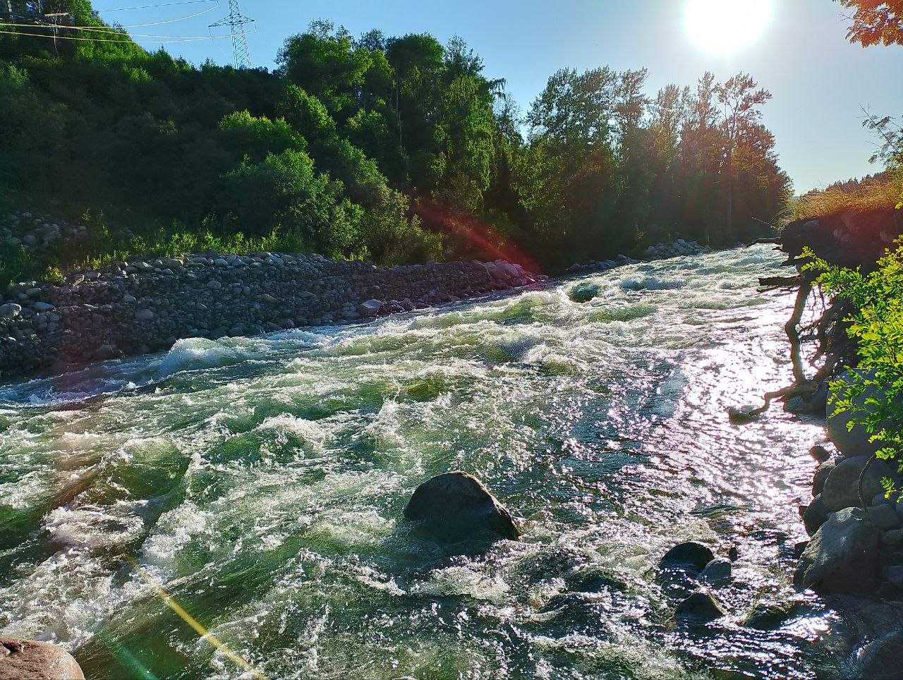
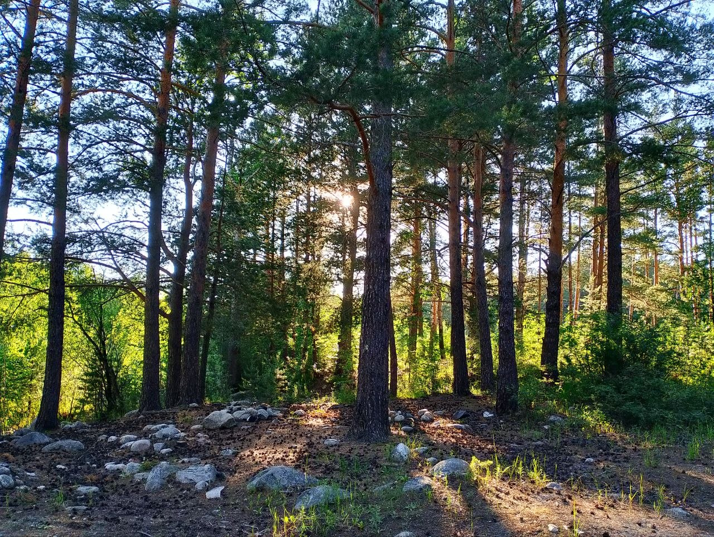
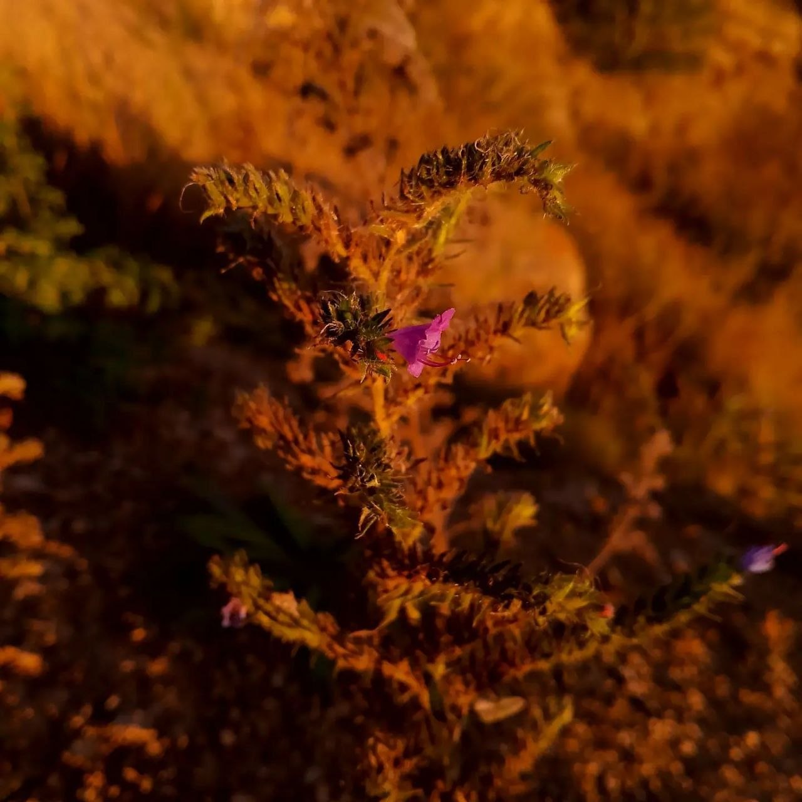
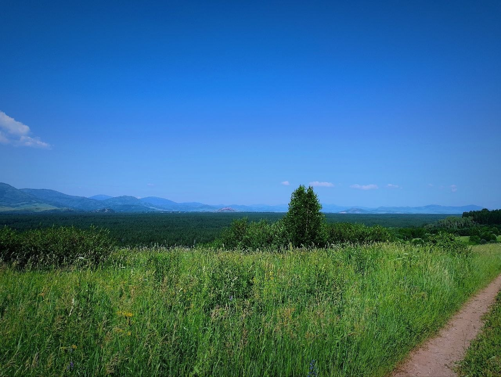
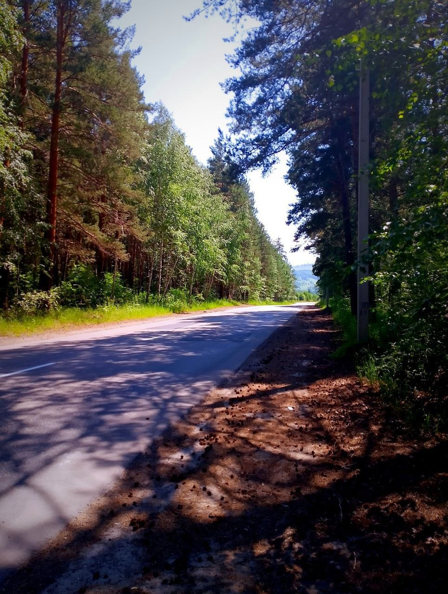
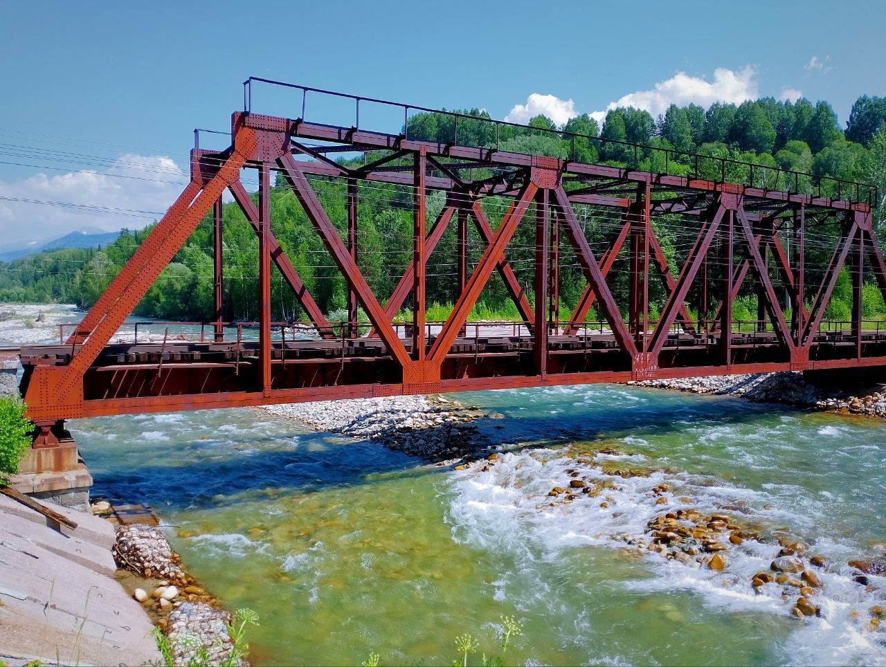
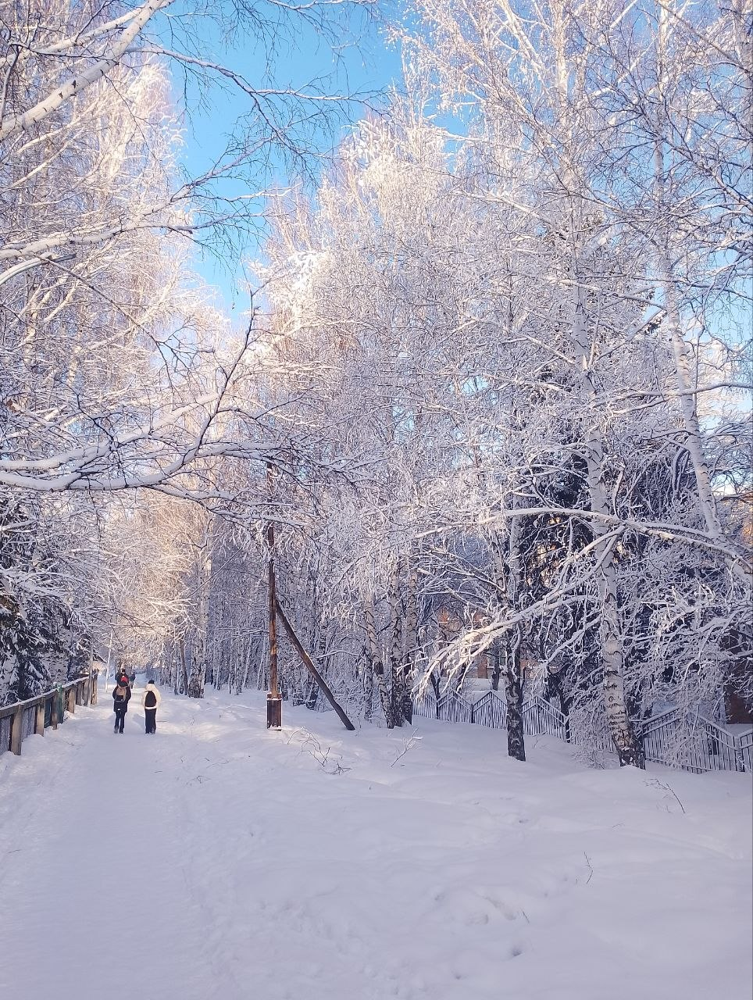
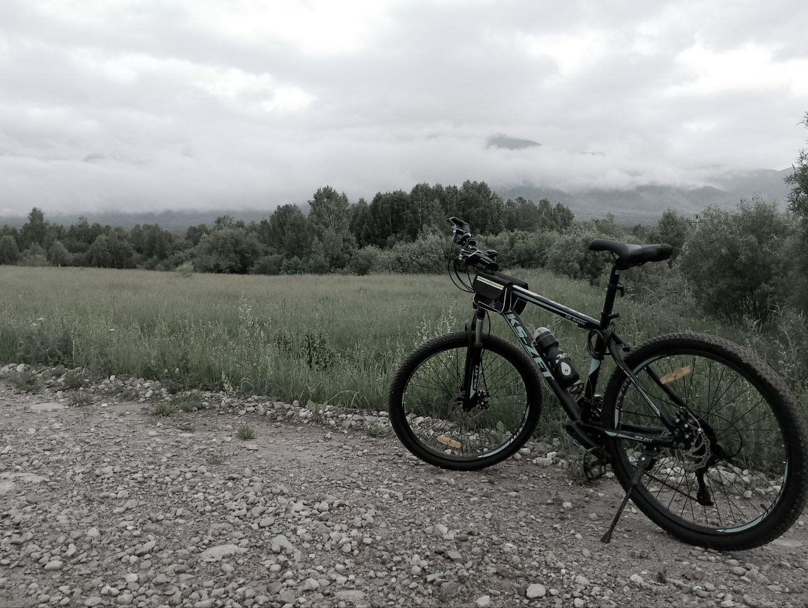

Почему именно Восточно-Казахстанская область
Локация проекта BigChanger HoloCinema Dome выбрана не случайно.
Восточно-Казахстанская область даёт не просто территорию под строительство,
а природную, туристическую и визуальную среду, которая усиливает саму идею проекта.
Здесь леса, реки, горные горизонты, простор и ощущение отдельной точки назначения.
Именно такая среда позволяет создать не просто объект, а полноценный туристический комплекс,
куда люди будут приезжать не на один вечер, а на несколько дней.
Галерея локации

Природная энергия региона
Горные реки и живая природная динамика формируют сильный визуальный образ территории
и усиливают туристическую ценность места.

Лес, тишина и глубина пространства
Лесная среда создаёт ощущение уединения, спокойствия и премиального отдыха,
которого невозможно добиться в плотной городской застройке.

Эмоциональная ценность поездки
Закаты, открытые поля и живая природа делают поездку не просто посещением объекта,
а полноценным впечатлением и частью туристического опыта.

Масштаб и открытые горизонты
Просторные панорамы и природный ландшафт дают проекту масштаб,
необходимый для формирования точки притяжения международного уровня.

Доступность без городского перегруза
Дороги и существующая среда позволяют развивать туристическую инфраструктуру,
сохраняя главный плюс региона — ощущение природы, воздуха и свободы.

Инфраструктурный и туристический потенциал
Реальные объекты, маршруты и транспортный контекст показывают,
что регион не является абстрактной точкой на карте, а уже имеет основу для дальнейшего роста.

Зимняя атмосфера Восточного Казахстана.
Снежные леса формируют естественную среду для сезонного туризма,
уединённого отдыха и иммерсивных форматов, интегрированных с природой.

Экосистема активного отдыха.
Регион поддерживает вело- и пеший туризм,
расширяя сценарии пребывания гостей за пределами Dome.